Grammy nominations 2027: the main categories and the African races
The nominees in the big four and the African races, plus Beyoncé's 100th nod.

Infantino has a race on his hands: Diallo and Tashima confirmed

Pochettino takes the Manchester United job

The Flavor Verdict: the 2027 Grammys built more rooms. Who gets into the main one?
GTA 6, decoded: why the world is counting down
Germany sign off from Adidas with a 5-0 win
Lukaku signs off for Belgium
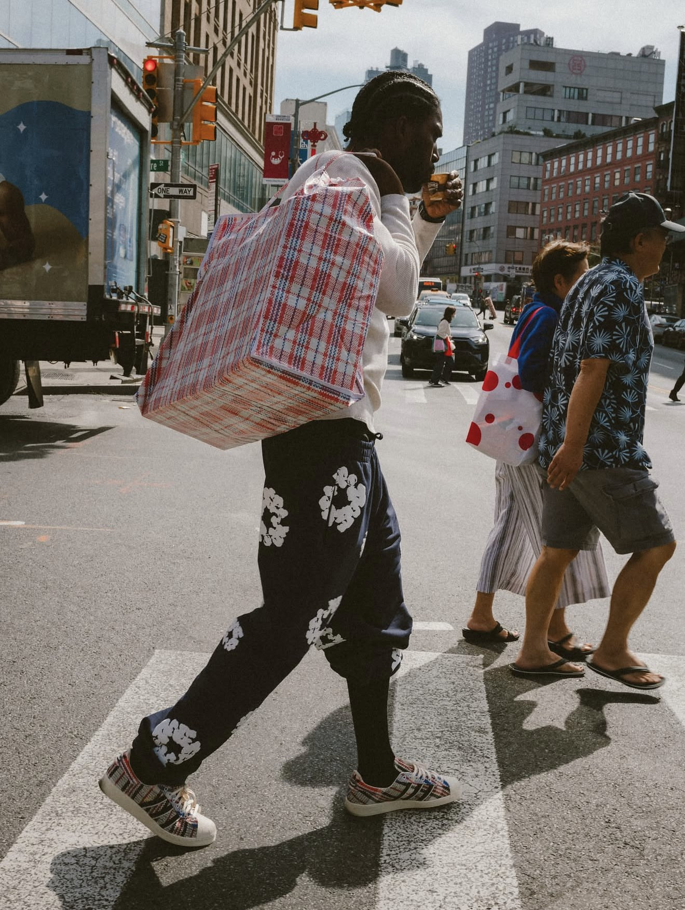
Ghana Must Go, decoded
The day Tegla Loroupe took New York
Makaveli at 30: the album 2Pac finished in a week
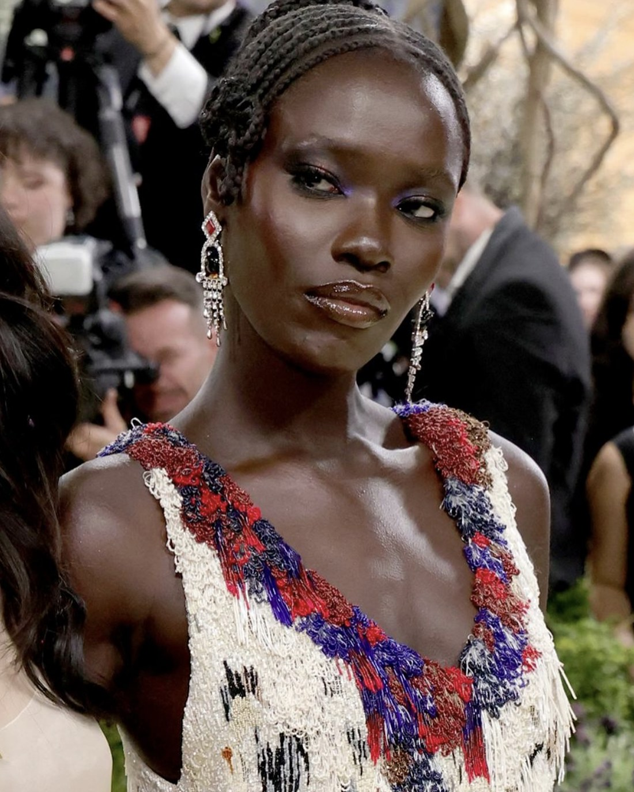
Awar Odhiang: from Pugnido to Model of the Year
How Ronaldo's Portugal story ended
Bensoul's Flight 420: a grown-up record that takes its time
Neema Ngelime: eight awards for a film still in development
Mugithi, decoded
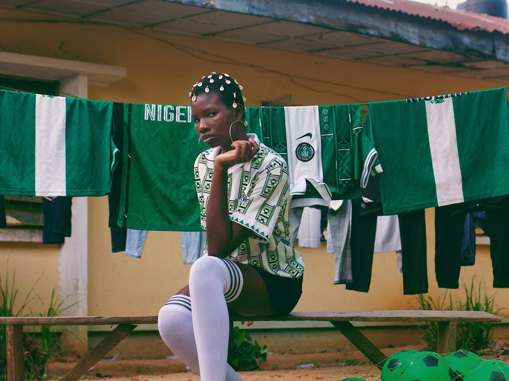
Kit Culture: how the football shirt became the outfit
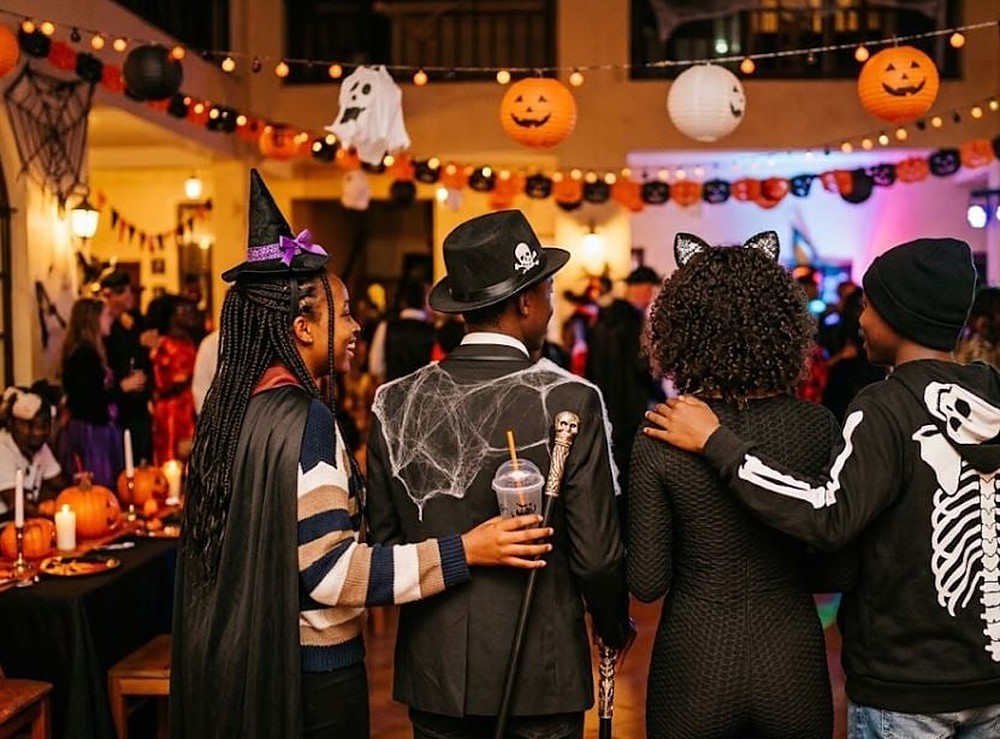
Is Halloween a Nairobi thing now?
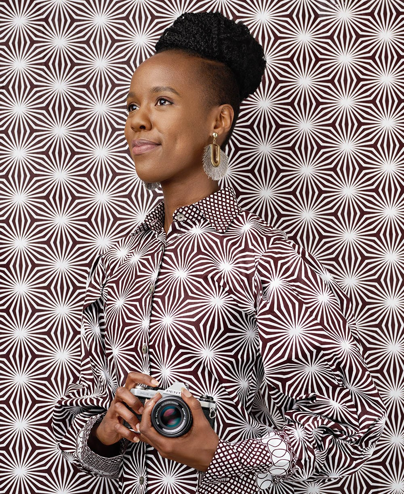
Thandiwe Muriu: the art of hiding in plain sight
Made in Lagos at six
Did Bob Marley's locks come from Kenya?
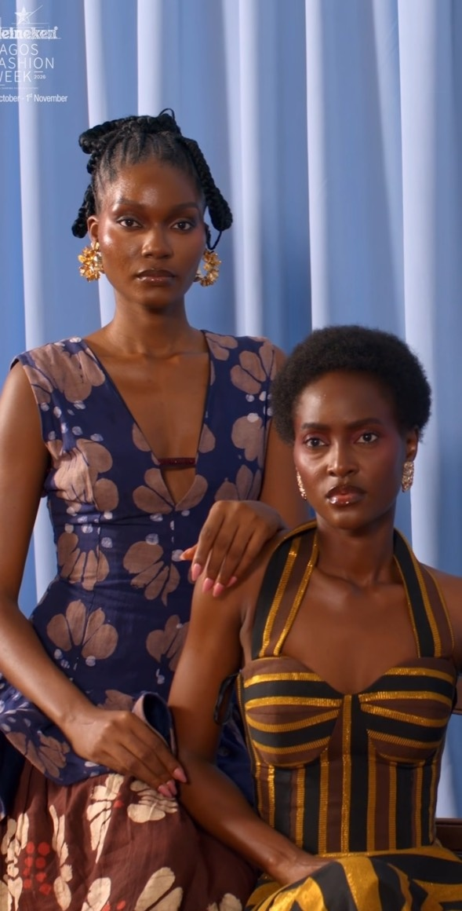
Lagos Fashion Week makes space for fashion’s business side
Lupin Part 4: bigger, flashier, still worth it
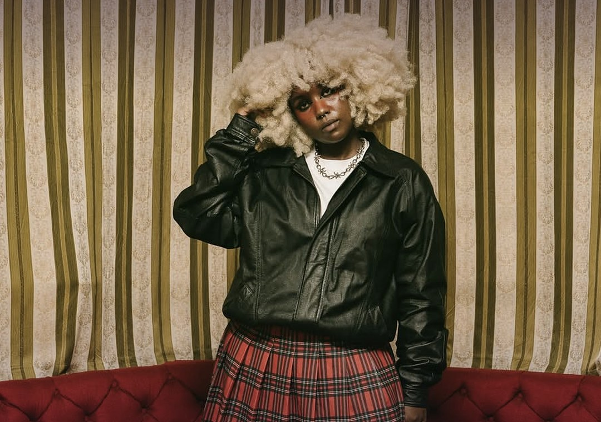
tg.blk: the Mombasa bedroom producer opening doors for alternative music
Kane ends England’s wait. Putellas makes it three.
Mr Eazi: singer, investor, owner
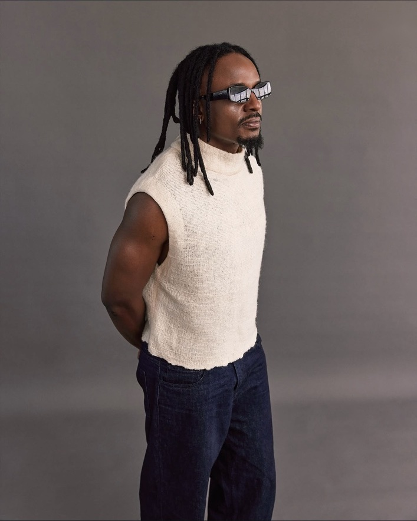
Savara: the rhythm before the spotlight
True Colors at 40: Cyndi Lauper's No. 1, four decades on
Nairobi's New Sound
One of one: Messi wins the Princess of Asturias Award on his own
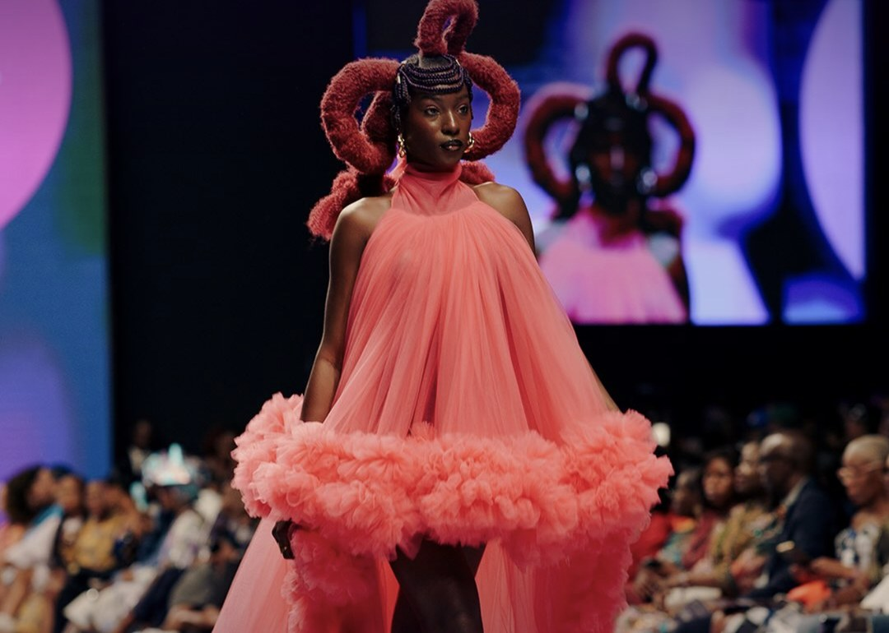
Lagos Fashion Week 2026: everything to know before the runway lights up
That chant on Thriller? It started in Cameroon
Infantino has a race on his hands: Diallo and Tashima confirmed
France's federation boss and Japan's former FA chief will face him in Rabat. Africa's 54 votes already back him.
Oprah's magazine is closing after 26 years
Oprah Daily, once O, The Oprah Magazine, ends in December. She's moving on to her podcast and a live show.
The Drop: Bien's Alusa Continua, Rema's E-Mortal Boy, Otile Brown and more
Five new releases for 20 November, led by Kenya.
Must watch this weekend: Sunrise on the Reaping, Steps and more
Haymitch's Hunger Games, Anele Mdoda's wedding and three new Netflix titles.
Pochettino takes the Manchester United job
18th, one league win, and Liverpool at Anfield first. The job he walks into.
The Flavor Verdict: the 2027 Grammys built more rooms. Who gets into the main one?
Spanish and K-pop in the top races, Tyla shut out, Africa still mostly in its own category. Our read on the nominations.
GTA 6, decoded: why the world is counting down
Thirteen years, two delays and a predecessor that beat Hollywood to $1 billion. Why Thursday matters.
Germany sign off from Adidas with a 5-0 win
Wirtz scored twice and Scherhant got his first goal as the three stripes bowed out in Berlin.
Kenya's One Woman One Bra wins Best Film at the AMAAs
Vincho Nchogu's film took three awards in Lagos, including the top prize.
Floyd Norman receives an honorary Oscar
Disney's first Black animator is only the fourth animator ever to get one.
Lukaku signs off for Belgium
94 goals, four World Cups and a family story that runs back to Kinshasa.
Joshua Baraka is HiPipo's Artist of the Year, again
Four awards at the 15th HiPipo Music Awards in Kampala, in the same week he released Recess II.
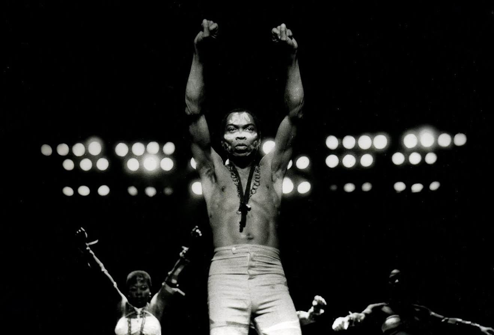
Fela Kuti and Sade enter the Rock & Roll Hall of Fame
Two Nigerian-born legends, honoured on the same night in Los Angeles. Fela is the first African-born solo artist in the Hall.
Ssaru, Nikita Kering’, Fancy Fingers and Azeezah at the 2026 Latin Grammys
Four Kenyan names in Las Vegas for the 27th Latin Grammy Awards.
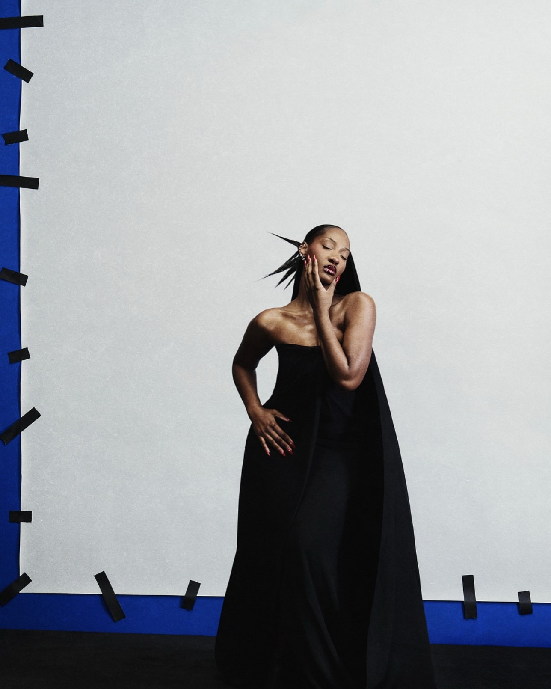
Tems is curating the Children of Blood and Bone soundtrack
Burna Boy, Ayra Starr and nine more are on it. Her own single lands 20 November.
Ghana Must Go, decoded
How a cheap checked tote got its name in 1983, and ended up on Denim Tears' new adidas.
Joshua Baraka becomes Visa's first Ugandan brand ambassador
The deal starts with his B'rakaland EA show in Kampala on 28 November.
Kenya signs a creative economy deal with Idris Elba
Funding, AI training and global market access for young Kenyan creatives.
The day Tegla Loroupe took New York
32 years ago today, a 21-year-old from West Pokot became the first African woman to win a major marathon.
Makaveli at 30: the album 2Pac finished in a week
Thirty years on, his last finished album still sounds like a man in a hurry.
Awar Odhiang: from Pugnido to Model of the Year
The model who closed Chanel is the British Fashion Council’s Model of the Year 2026. This is how she got there.
How Ronaldo's Portugal story ended
The bust-up, the 146-goal record and what comes next.
Nairobi this weekend: 6–8 November
KITFest's theatre market, The Moth, Kibera's youth chess tournament and Camp Mulla at Masshouse.
Bensoul's Flight 420: a grown-up record that takes its time
Thirteen tracks, three colours and a deep guest list. Our call on Bensoul's new album.
Neema Ngelime: eight awards for a film still in development
The Tanzanian director to watch, and the documentary winning before it is finished.
Mugithi, decoded
One voice, one guitar, and a whole room holding on. What mugithi is and where it came from.
Kit Culture: how the football shirt became the outfit
From London queues to Soweto's rooftops, the jersey left the stadium.
Is Halloween a Nairobi thing now?
Ten years ago it was a hard sell. Tonight the city is in costume. How a borrowed holiday found a home in Nairobi.
Thandiwe Muriu: the art of hiding in plain sight
The Nairobi photographer dresses women in the same fabric as the wall behind them, and they're still all you can see.
The Drop: Bensoul's Flight 420, Toxic Lyrikali, Dominic Fike and more
Nine new releases from 29–30 October, led by Kenya.
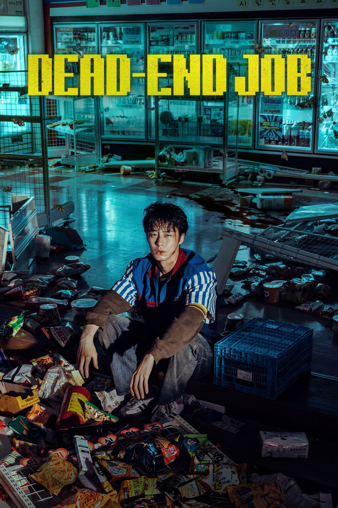
Must watch this weekend: Call Me Queen, How to Ruin Diwali and more
A Nairobi story in cinemas, a Diwali disaster and two Netflix thrillers.
Made in Lagos at six
How Wizkid's fourth album rewrote Africa's chart records.
Did Bob Marley's locks come from Kenya?
Flavor Roots Issue 02: from Kingston to the Mau Mau forests, the real story behind the locks.
Lagos Fashion Week makes space for fashion’s business side
From fashion-business sessions to a retail presentation, Wednesday’s programme put the work around the clothes in view.
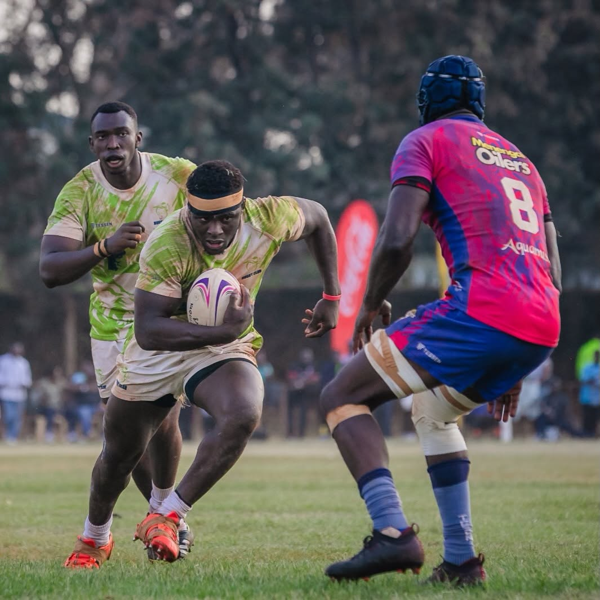
Nairobi this weekend: 30 October – 1 November
The Floodies final, a Halloween double at Village Market, a new Madd Madd World book and Rock Riot.
Sir Patrick Stewart dies at 86
The Star Trek and X-Men actor died at his home in Los Angeles on 28 October.
Lupin Part 4: bigger, flashier, still worth it
Critics love it, fans are split. Our call on Omar Sy's return.
From brief to beat: FAME Week pairs African music makers with storytellers
A songwriting camp links music creators with screen and content briefs, while raising questions about credit, licensing and fair pay.
tg.blk: the Mombasa bedroom producer opening doors for alternative music
The artist to watch from the coast.
Kane ends England’s wait. Putellas makes it three.
Harry Kane and Alexia Putellas lead a night of winners, records and new ground for the Ballon d’Or in London.
From NFL partner to Super Bowl headliner: Jay-Z takes the Super Bowl stage
Jay-Z will headline the Apple Music Super Bowl LXI Halftime Show in the 30th-anniversary year of Reasonable Doubt.
Tyla opens music scholarships to South African students
Four of 10 US$5,000 awards are reserved for South African students. Applications may close early.
Mr Eazi: singer, investor, owner
Seven moves that turned an Afrobeats star into a business.
Savara: the rhythm before the spotlight
After 17 years helping shape Sauti Sol's sound, Savara is making room for a sound of his own.
True Colors at 40: Cyndi Lauper's No. 1, four decades on
Forty years ago today, a quiet ballad went to No. 1.
Nairobi's New Sound
It isn't one genre. That's the whole point. Issue 01 of the Flavor Cover.
One of one: Messi wins the Princess of Asturias Award on his own
The first footballer to take Spain's top sports honour alone.
Tems makes Billboard history with “What You Need”
30 weeks on the Hot 100, a record for a solo African song.
Must watch this weekend: Lupin, A Land Apart, Spinners and more
This weekend's picks across cinemas and streaming.
Ayra Starr and Zayn take No. 1 on the UK Afrobeats chart
“Heaven Baby” climbs to the top. Here's the top five.
Lagos Fashion Week 2026: everything to know before the runway lights up
28 October to 1 November. The Crafted season.
That chant on Thriller? It started in Cameroon
Flavor Roots Issue 01: how Manu Dibango's Soul Makossa travelled from Douala to the world.
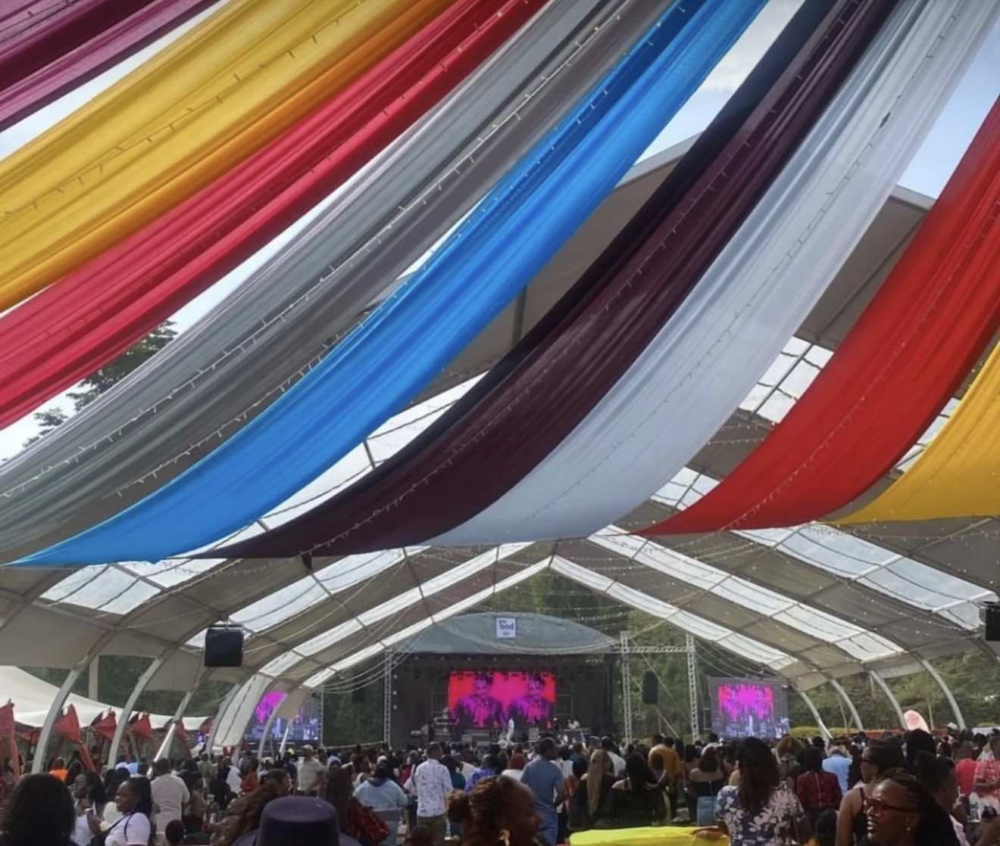
Nairobi this weekend: 23–25 October
Kikuyu Love Sessions, the Nairobi Marathon and the last days of the NBO Film Festival.
Bridget Blue's RNB is in the Grammy conversation
Under consideration for Best Progressive R&B Album.
Bien's new album Alusa Continua lands on 20 November
17 tracks, with 2 Chainz, Alikiba, Femi One and more.
Drake sued over the chorus of “Janice STFU”
A Beyoncé producer says the hook is his. Drake's team says they've never heard of him.
Super Bowl LXI is coming to Disney+
ESPN's first Super Bowl, streaming on 14 February 2027.
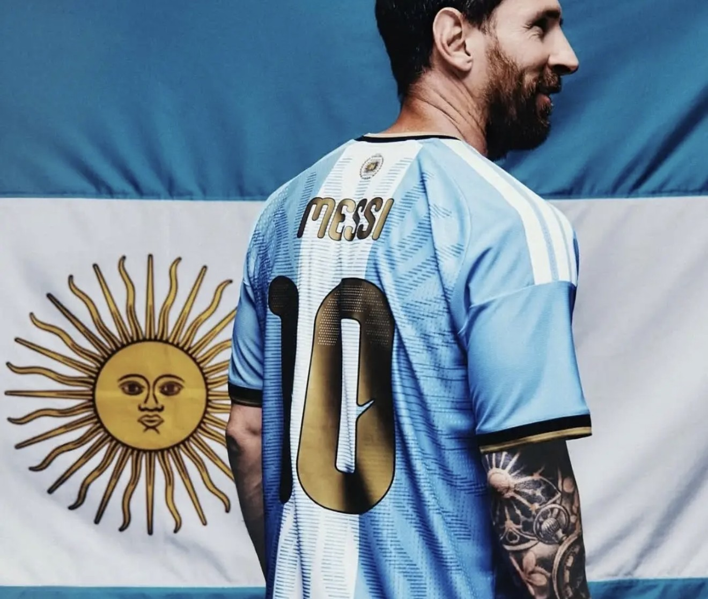
Messi says goodbye to Argentina with a goal and a 3–0 win
Game 208, goal 126, and a tearful farewell at the Monumental.
End of an era: Germany's last Adidas shirt
72 years, four World Cups, one black-and-gold goodbye.
Sofiya Nzau is taking Mwaki around the world
A 2026/27 world tour, with Australia confirmed for February.
Tems is the only double nominee in the first Soul Train Awards reveal
R&B/Soul Song of the Year and Spotify's RNB X International Artist.
The Flavor 10 Rewind
More chartsSaturday 21 November · Crossing borders, 2010–2015. Ten songs from the years African pop stopped staying home.
- 01–I'll Be OkayBien
- 02–FinaleBien ft. Alikiba
- 03–Heaven BabyAyra Starr ft. Zayn
- 04–Chai ya Saa KumiYwaya Tajiri
- 05▲4KaumbeteBien & Coster Ojwang
- 06FRESHOmokaBien
- 07FRESHDon't GoBien, Joshua Baraka & The Composers
- 08FRESHRun Like WaterBien
- 09FRESHXOXOBien & Ywaya Tajiri
- 10FRESHHow Can I ForgetBien, Oxlade & Øntiri
- 01INFERNOPeruzzi, Zlatan & Shoday · out 29 Oct
- 02PARTYDidi B & Davido · out 5 Nov
- 03ADIOSDidi B & Qing Madi · out 5 Nov
- 04REPAIRO'Kenneth · out 13 Nov
- 05ME NSANO'Kenneth · out 13 Nov
- 06DRTYRuger ft. ODUMODUBLVCK · out 11 Nov
- 07Omo OlogoZinoleesky · out 13 Nov
- 08Home TrainingMayorkun · out 29 Oct
- 09Living ThingT.I BLAZE · out 13 Nov
- 10MelodyKing Promise · out 22 Oct
- 01LalaMDU aka TRP & Mzizi ft. Chymamusique · out 17 Nov
- 02Does Anybody CareMDU aka TRP & WAPO Jije · out 17 Nov
- 03Oh MyKidd Carder ft. BNXN · out 13 Nov
- 04Ubaba wakhoMzukulu ft. Naledi Aphiwe · out 13 Nov
- 05Honda FitNdine Emma ft. Way Dee, Chanda na Kay & Frank Ro · out 14 Nov
- 06JaiyeOlamide ft. FOLA · out 17 Nov
- 07Better Days IntroHoly Ten · out 18 Nov
- 08All This For YouHoly Ten ft. MrCandy · out 18 Nov
- 09HomeKwesi Arthur · out 19 Nov
- 10JewaEz Maestro, Statik_012 & Ch'cco ft. CarterIV & DJ Tshegu · out 13 Nov
- 01Party Don't StopCamp Mulla ft. Collo · 2010
- 02Oliver TwistD'banj · 2011
- 03Dami DuroDavido · 2011
- 04KhonaMafikizolo ft. Uhuru · 2013
- 05Number OneDiamond Platnumz · 2013
- 06JohnnyYemi Alade · 2013
- 07Sitya LossEddy Kenzo · 2014
- 08Adonai (Remix)Sarkodie ft. Castro · 2014
- 09OjuelegbaWizkid · 2014
- 10Sura YakoSauti Sol · 2014
Sources: Picked by Flavor Africa. Credits checked against Wikipedia, Music in Africa, OkayAfrica, Pulse, The Citizen (TZ), Daily Monitor, citifmonline, NotJustOk.
A new 10 every day: Kenya on Monday, West Africa Tuesday, South Wednesday, East & Central Thursday, Fresh Friday, Rewind Saturday, Reset Sunday. Tuesday to Friday only count songs out in the last month, and no song comes back for four weeks.
Ngoma na Marafiki
The next event from Flavor Africa. Date, venue and tickets are on the way.
Oprah's magazine is closing after 26 years
Kenya's One Woman One Bra wins Best Film at the AMAAs
Floyd Norman receives an honorary Oscar
Grammy nominations 2027: the main categories and the African races
Joshua Baraka is HiPipo's Artist of the Year, again
Fela Kuti and Sade enter the Rock & Roll Hall of Fame
Ssaru, Nikita Kering’, Fancy Fingers and Azeezah at the 2026 Latin Grammys
Tems is curating the Children of Blood and Bone soundtrack
Joshua Baraka becomes Visa's first Ugandan brand ambassador
Kenya signs a creative economy deal with Idris Elba
Sir Patrick Stewart dies at 86
From brief to beat: FAME Week pairs African music makers with storytellers
From NFL partner to Super Bowl headliner: Jay-Z takes the Super Bowl stage
Tyla opens music scholarships to South African students
Tems makes Billboard history with “What You Need”
Bridget Blue's RNB is in the Grammy conversation
Bien's new album Alusa Continua lands on 20 November
Drake sued over the chorus of “Janice STFU”
Sofiya Nzau is taking Mwaki around the world
Tems is the only double nominee in the first Soul Train Awards reveal
Infantino has a race on his hands: Diallo and Tashima confirmed
France's federation boss and Japan's former FA chief will face him in Rabat. Africa's 54 votes already back him.
Oprah's magazine is closing after 26 years
Oprah Daily, once O, The Oprah Magazine, ends in December. She's moving on to her podcast and a live show.
Pochettino takes the Manchester United job
18th, one league win, and Liverpool at Anfield first. The job he walks into.
GTA 6, decoded: why the world is counting down
Thirteen years, two delays and a predecessor that beat Hollywood to $1 billion. Why Thursday matters.
Germany sign off from Adidas with a 5-0 win
Wirtz scored twice and Scherhant got his first goal as the three stripes bowed out in Berlin.
Lukaku signs off for Belgium
94 goals, four World Cups and a family story that runs back to Kinshasa.
Ghana Must Go, decoded
How a cheap checked tote got its name in 1983, and ended up on Denim Tears' new adidas.
The day Tegla Loroupe took New York
32 years ago today, a 21-year-old from West Pokot became the first African woman to win a major marathon.
Makaveli at 30: the album 2Pac finished in a week
Thirty years on, his last finished album still sounds like a man in a hurry.
How Ronaldo's Portugal story ended
The bust-up, the 146-goal record and what comes next.
Mugithi, decoded
One voice, one guitar, and a whole room holding on. What mugithi is and where it came from.
Kit Culture: how the football shirt became the outfit
From London queues to Soweto's rooftops, the jersey left the stadium.
Is Halloween a Nairobi thing now?
Ten years ago it was a hard sell. Tonight the city is in costume. How a borrowed holiday found a home in Nairobi.
Thandiwe Muriu: the art of hiding in plain sight
The Nairobi photographer dresses women in the same fabric as the wall behind them, and they're still all you can see.
Made in Lagos at six
How Wizkid's fourth album rewrote Africa's chart records.
Did Bob Marley's locks come from Kenya?
Flavor Roots Issue 02: from Kingston to the Mau Mau forests, the real story behind the locks.
Kane ends England’s wait. Putellas makes it three.
Harry Kane and Alexia Putellas lead a night of winners, records and new ground for the Ballon d’Or in London.
True Colors at 40: Cyndi Lauper's No. 1, four decades on
Forty years ago today, a quiet ballad went to No. 1.
One of one: Messi wins the Princess of Asturias Award on his own
The first footballer to take Spain's top sports honour alone.
That chant on Thriller? It started in Cameroon
Flavor Roots Issue 01: how Manu Dibango's Soul Makossa travelled from Douala to the world.
Super Bowl LXI is coming to Disney+
ESPN's first Super Bowl, streaming on 14 February 2027.
Messi says goodbye to Argentina with a goal and a 3–0 win
Game 208, goal 126, and a tearful farewell at the Monumental.
End of an era: Germany's last Adidas shirt
72 years, four World Cups, one black-and-gold goodbye.